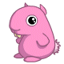
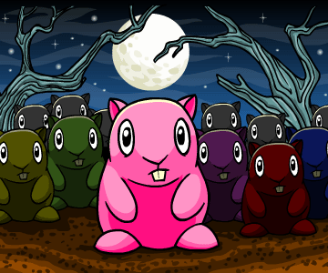
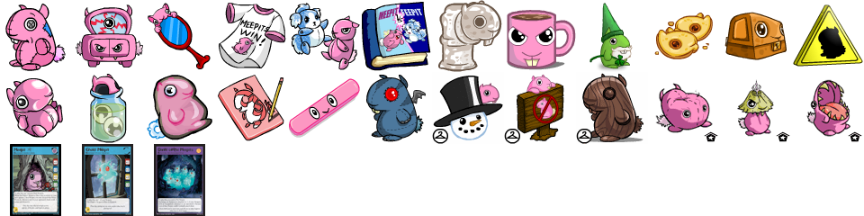
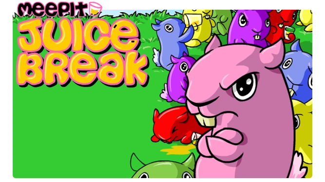
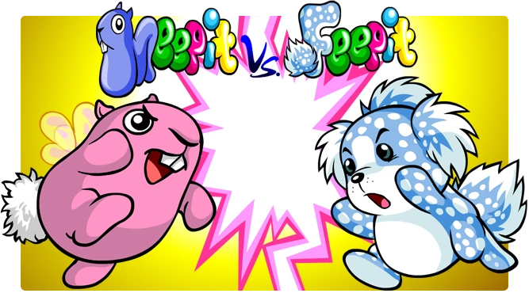
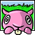
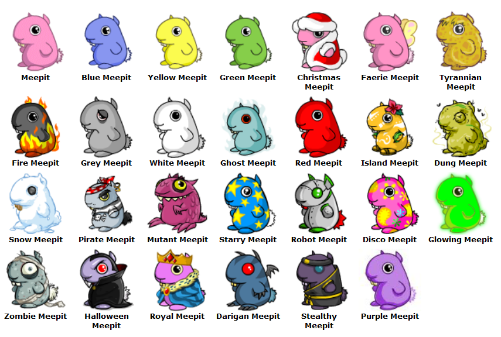
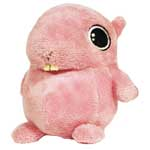
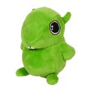

Meepits

The Meepit is a creature from the browser-based virtual pet game Neopets. It is a petpet—a companion that can be attached to a Neopet and painted different colors. It was first released in 2001 according to Jellyneo's Item Database, just two years after Neopets began.
Meepit's entry in the Neopedia
Meepit's official details:
Name: Meepit
Weight: 1 lbs.
Rarity: 98
Estimated Value (approx): 10857 NP
There is something awfully spooky about those big staring eyes...
On Neopets, there are several Meepit-themed items:
Meepits prominently feature in some on-site games such as Meepit Juice Break, a puzzle game where the player connects pipes to feed Meepits, and Meepit vs. Feepit, an action game about Meepits fighting Feepits.
Two Neoboards avatars are associated with the Meepit: A Meepit! Run! and Meepit Vs Feepit. These are earned by sending scores over a certain number of points in their respective games.
Below are all the colors that Meepit can be painted as of 1/8/23. My favorites are the Faerie Meepit and Ghost Meepit.
There are also Meepit plushies! I have the pink one.
 